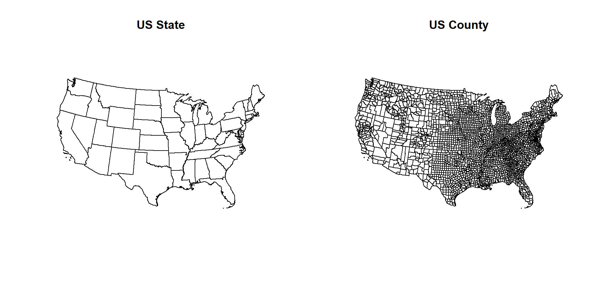
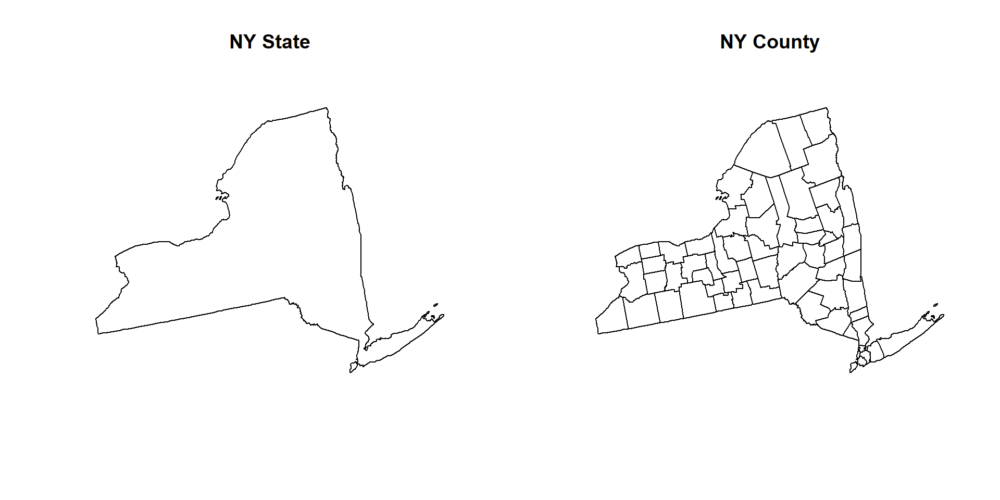
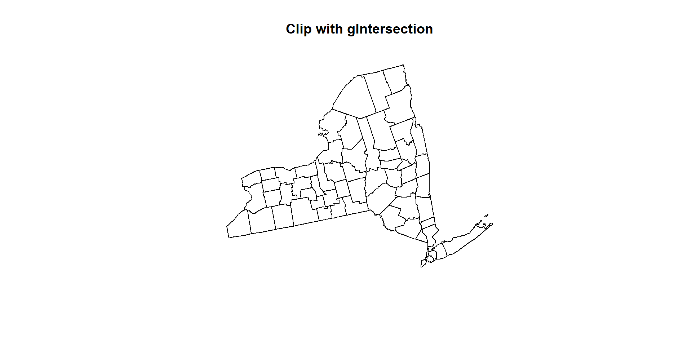
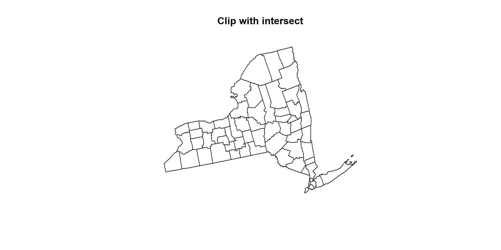
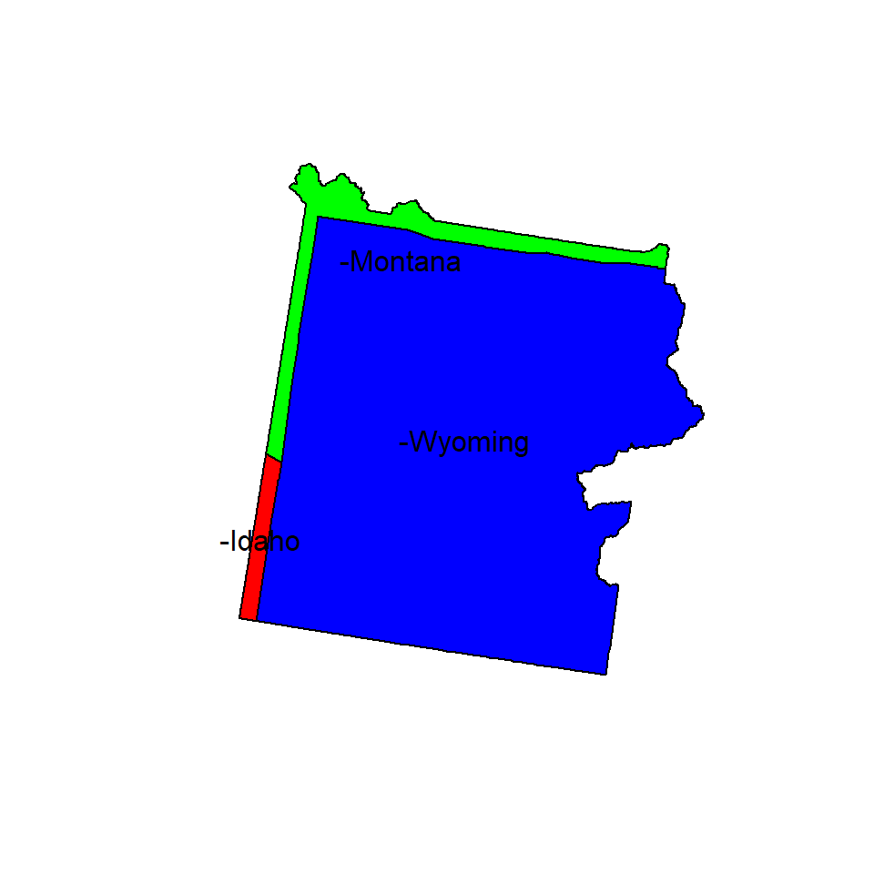
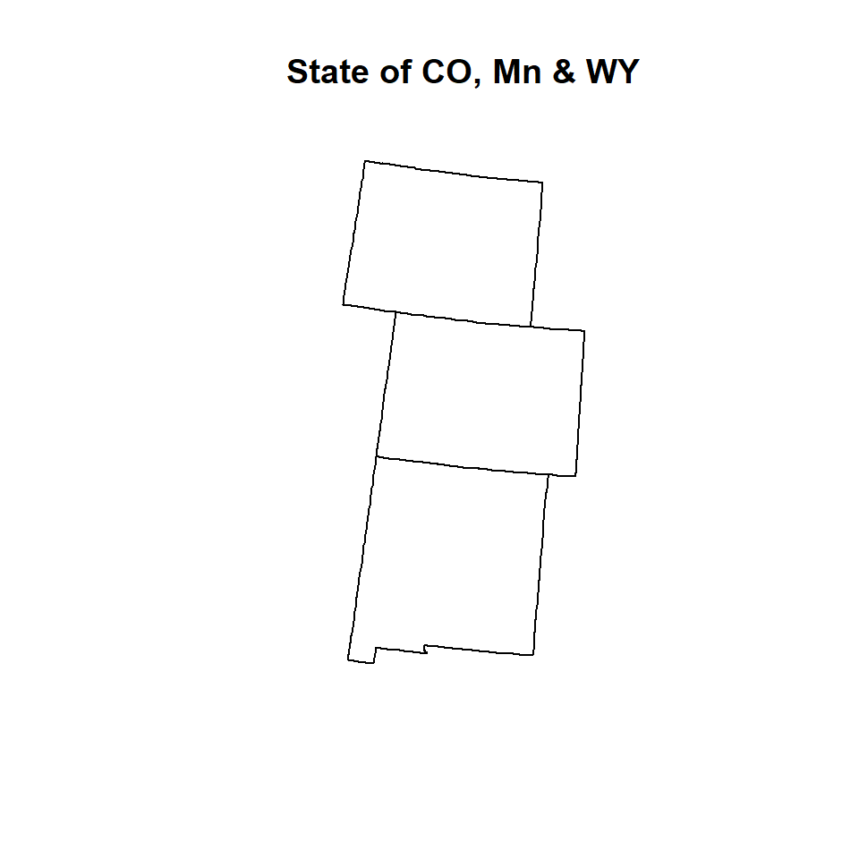
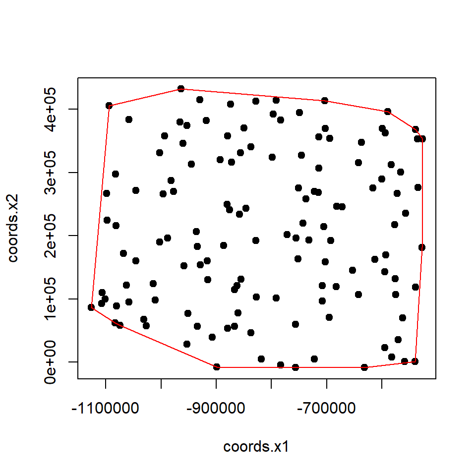
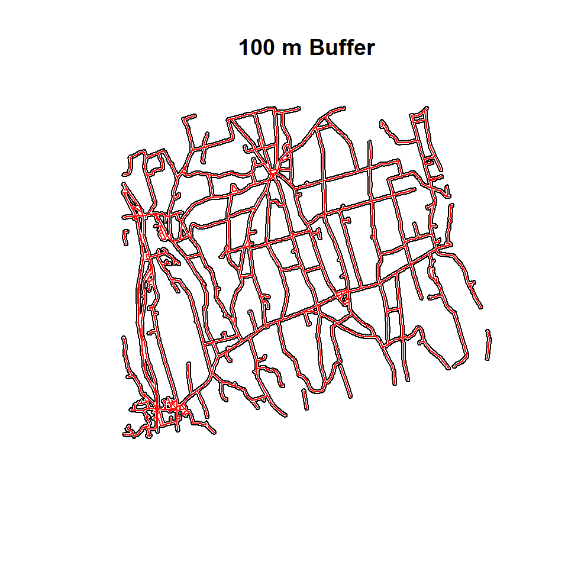
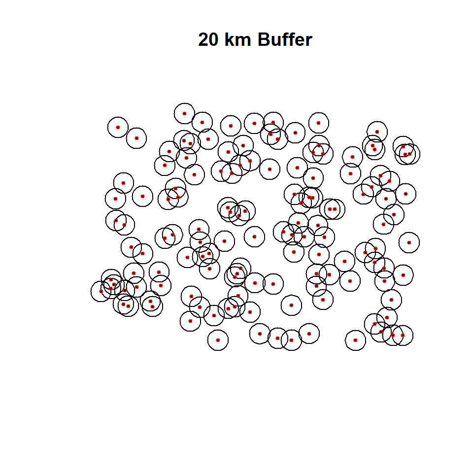

Geoprocessing of Vector Data
Geo-processing is a GIS operation used to manipulate spatial data.
In this exercise we will learn following Geo-processing operations of vector data in R.
R Packages
- rgdal: Bindings for the Geospatial Data Abstraction Library
- raster: Geographic Data Analysis and Modeling
- sf:Support for simple features, a standardized way to encode spatial vector data
- maptools: Tools for Reading and Handling Spatial Objects
- rgeos: Interface to Geometry Engine - Open Source (GEOS)
Load packages
# load packages
library(raster)
library (rgdal)
library(rgeos)
library(maptools)
library(sf)Load Data
We will use following data set, and data could available for download from here.
- US State shape file (US_STATE.shp)
- US County shape file (US_County.shp)
- Point Shape File of soil sampling locations (CO_SOC_data.shp)
- Line shape file (Ononda_Street_PROJ.shp)
- Boundary of Yellow Stone National Park (Yellow_Stone.shp)
Before reading the data from a local drive, you need to define a working directory from where you want to read or to write data. We will use setwd() function to create a working directory. Or we can define a path for data outside of our working directory from where we can read files. In this case, we will use paste0(path, “file name”)
#### Set working directory
# setwd("~//geoprocessing-vector-data")# Define data folder
dataFolder<-"F://Spatial_Data_Processing_and_Analysis_R//Data//DATA_04//"Load US State & County Shape files
US.STATE<-shapefile(paste0(dataFolder,"US_STATE.shp"))
US.COUNTY<-shapefile(paste0(dataFolder,"US_COUNTY.shp"))Plot them site by site
# Map US state and county
par(mfrow=c(1,2))
plot(US.STATE, main="US State")
plot(US.COUNTY, main="US County")
par(mfrow=c(1,1))Extracting a variable name (State name)
# Extracting a variable (state name)
US.STATE$STATE## [1] "Alabama" "Arizona" "Colorado"
## [4] "Connecticut" "Florida" "Georgia"
## [7] "Idaho" "Indiana" "Kansas"
## [10] "Louisiana" "Massachusetts" "Minnesota"
## [13] "Missouri" "Montana" "Nevada"
## [16] "New Jersey" "New York" "North Dakota"
## [19] "Oklahoma" "Pennsylvania" "South Carolina"
## [22] "South Dakota" "Texas" "Vermont"
## [25] "West Virginia" "Arkansas" "California"
## [28] "Delaware" "District of Columbia" "Illinois"
## [31] "Iowa" "Kentucky" "Maine"
## [34] "Maryland" "Michigan" "Mississippi"
## [37] "Nebraska" "New Hampshire" "New Mexico"
## [40] "North Carolina" "Ohio" "Oregon"
## [43] "Rhode Island" "Tennessee" "Utah"
## [46] "Virginia" "Washington" "Wisconsin"
## [49] "Wyoming"Clipping
Clipping spatial data is a basic GIS task. For vector data, it involves removing unwanted features outside of an area of interest. For example, you might want to do some geospatial modeling covering a area in New York state, but we may have data for USA, in this case you need to apply clipping function to remove area outside of the New York State. It acts like a cookie cutter to cut out a piece of one feature class using one or more of the features in another feature class.

Clipping
In R, you can do this several ways with different R packages. In this exercise, we will clip out other state or counties from US State and County polygon shape files, expect our area of interest (for example New York).
The most useful function to select a area of interest from any spatial data is R-base function subset() (although it wrap with other packages).
# NY state boundary
NY.STATE <- subset(US.STATE, STATE=="New York")
# NY county
NY.COUNTY <- subset(US.COUNTY, STATE=="New York")
NY.COUNTY## class : SpatialPolygonsDataFrame
## features : 62
## extent : 1324221, 1991064, 2150873, 2658558 (xmin, xmax, ymin, ymax)
## coord. ref. : +proj=aea +lat_1=29.5 +lat_2=45.5 +lat_0=23 +lon_0=-96 +x_0=0 +y_0=0 +datum=NAD83 +units=m +no_defs +ellps=GRS80 +towgs84=0,0,0
## variables : 11
## names : FIPS, x, y, REGION_ID, DIVISION_I, STATE_ID, COUNTY_ID, REGION, DIVISION, STATE, COUNTY
## min values : 36001, 1356926, 2161994, 1, 2, 36, 1, Northeast, Middle Atlantic, New York, Albany County
## max values : 36123, 1916559, 2623675, 1, 2, 36, 123, Northeast, Middle Atlantic, New York, Yates Countyshapefile(NY.STATE, paste0(dataFolder,"NY_STATE_BD.shp"), overwrite=TRUE)After sub setting, you notice that NY.COUNT retains both geometry and attribute information of parent polygon
# Map NY state boundary and county polygon
par(mfrow=c(1,2))
plot(NY.STATE, main="NY State")
plot(NY.COUNTY, main="NY County")
par(mfrow=c(1,1))You can select multiple States using following subset() function
GP.STATE<-subset(US.STATE,STATE=="Colorado" | STATE=="Kansas" | STATE=="New Mexico"| STATE=="Wyoming")plot(GP.STATE, main="States of CO, KA, NY & WY")
gIntersection() function of rgeos package is also able to clip out undesirable area
# Clip US county shape file with NY State boundary
clip_01 <- gIntersection(NY.STATE, US.COUNTY, byid = TRUE, drop_lower_td = TRUE)
clip_01## class : SpatialPolygons
## features : 68
## extent : 1324221, 1991064, 2150873, 2658558 (xmin, xmax, ymin, ymax)
## coord. ref. : +proj=aea +lat_1=29.5 +lat_2=45.5 +lat_0=23 +lon_0=-96 +x_0=0 +y_0=0 +datum=NAD83 +units=m +no_defs +ellps=GRS80 +towgs84=0,0,0plot(clip_01, main= "Clip with gIntersection")
However, the clipped output with gIntersection() function no longer contains a data frame because the gIntersection doesn’t know which data frame items to save in to the new object. This means we must add them back in manually, but even this is relatively straight-forward.
The intersect() function of raster package works like subset function
clip_02 <- intersect(NY.STATE, US.COUNTY)
clip_02## class : SpatialPolygonsDataFrame
## features : 68
## extent : 1324221, 1991064, 2150873, 2658558 (xmin, xmax, ymin, ymax)
## coord. ref. : +proj=aea +lat_1=29.5 +lat_2=45.5 +lat_0=23 +lon_0=-96 +x_0=0 +y_0=0 +datum=NAD83 +units=m +no_defs +ellps=GRS80 +towgs84=0,0,0
## variables : 17
## names : REGION_ID.1, DIVISION_I.1, STATE_ID.1, REGION.1, DIVISION.1, STATE.1, FIPS, x, y, REGION_ID.2, DIVISION_I.2, STATE_ID.2, COUNTY_ID, REGION.2, DIVISION.2, ...
## min values : 1, 2, 36, Northeast, Middle Atlantic, New York, 25003, 1356926, 2161994, 1, 1, 25, 1, Northeast, Middle Atlantic, ...
## max values : 1, 2, 36, Northeast, Middle Atlantic, New York, 36123, 1916559, 2623675, 1, 2, 36, 123, Northeast, New England, ...plot(clip_02, main="Clip with intersect")
Union
Union combines two or multiple spatial objects and a create new features where geometry and attributes of input features retain.

Union
We will use state boundary of CO, AK, NY and WY to create a new feature class using union() function of raster package or spRbind function of maptools package. The shape files of these states are located in **~_STATE** sub-directory of the working directory. We read these files one by one one using shapefile() function of raster package or create a list of these files and then apply union function function raster package or
# Load four shapefiles of four states
CO<-shapefile(paste0(dataFolder,".\\GP_STATE\\CO_STATE_BD.shp"))
KS<-shapefile(paste0(dataFolder,".\\GP_STATE\\KS_STATE_BD.shp"))
NM<-shapefile(paste0(dataFolder,".\\GP_STATE\\NM_STATE_BD.shp"))
WY<-shapefile(paste0(dataFolder,".\\GP_STATE\\WY_STATE_BD.shp"))Now we will generate a simple plot to show the spatial location of the these features, before applying union() function or spRbind()function, However, neither union() or spRbind() function can not join more than tow polygons at a time. So, you have to union polygons one by one.
# Union CO & KA
union_01<-union(CO,KS)
# Add NM
union_02<-union(union_01, NM)
# Add WY
union_03<-union(union_02,WY)
# now check
union_03@data## REGION_ID.1 DIVISION_I.1 STATE_ID.1 REGION.1 DIVISION.1 STATE.1
## 1 NA NA NA <NA> <NA> <NA>
## 2 NA NA NA <NA> <NA> <NA>
## 3 4 8 8 West Mountain Colorado
## 4 NA NA NA <NA> <NA> <NA>
## REGION_ID.2 DIVISION_I.2 STATE_ID.2 REGION.2 DIVISION.2 STATE.2
## 1 2 4 20 Midwest West North Central Kansas
## 2 NA NA NA <NA> <NA> <NA>
## 3 NA NA NA <NA> <NA> <NA>
## 4 4 8 56 West Mountain Wyoming
## REGION_ID.1.1 DIVISION_I.1.1 STATE_ID.1.1 REGION.1.1 DIVISION.1.1
## 1 NA NA NA <NA> <NA>
## 2 4 8 35 West Mountain
## 3 NA NA NA <NA> <NA>
## 4 NA NA NA <NA> <NA>
## STATE.1.1
## 1 <NA>
## 2 New Mexico
## 3 <NA>
## 4 <NA>
You can union hundreds of spatial polygons in a folder with similar geometry and attribute table using spRbind function of maptools package or union() function in a loop. First, you have to create a list these shape files using list.files() function, then use for loop to read all the files using readORG() function and then assign new feature IDs using spChFIDs() function of sp package, and finally apply spRbind() or union()to all files to union them. It is better to use spRbind function to union several polygons since it binds attribute data row wise.
# create a list of file
files <- list.files(path=paste0(dataFolder, ".//GP_STATE"),pattern="*.shp$", recursive=TRUE,full.names=TRUE) # Create a list files
print(files)## [1] "F://Spatial_Data_Processing_and_Analysis_R//Data//DATA_04//.//GP_STATE/CO_STATE_BD.shp"
## [2] "F://Spatial_Data_Processing_and_Analysis_R//Data//DATA_04//.//GP_STATE/KS_STATE_BD.shp"
## [3] "F://Spatial_Data_Processing_and_Analysis_R//Data//DATA_04//.//GP_STATE/NM_STATE_BD.shp"
## [4] "F://Spatial_Data_Processing_and_Analysis_R//Data//DATA_04//.//GP_STATE/WY_STATE_BD.shp"uid<-1
# Get polygons from first file
GP.STATE<- readOGR(files[1],gsub("^.*/(.*).shp$", "\\1", files[1]))## OGR data source with driver: ESRI Shapefile
## Source: "F:\Spatial_Data_Processing_and_Analysis_R\Data\DATA_04\GP_STATE\CO_STATE_BD.shp", layer: "CO_STATE_BD"
## with 1 features
## It has 6 fieldsn <- length(slot(GP.STATE, "polygons"))
GP.STATE <- spChFIDs(GP.STATE, as.character(uid:(uid+n-1)))
uid <- uid + n
# mapunit polygon: combin remaining polygons with first polygoan
for (i in 2:length(files)) {
temp.data <- readOGR(files[i], gsub("^.*/(.*).shp$", "\\1",files[i]))
n <- length(slot(temp.data, "polygons"))
temp.data <- spChFIDs(temp.data, as.character(uid:(uid+n-1)))
uid <- uid + n
#poly.data <- union(poly.data,temp.data)
GP.STATE <- spRbind(GP.STATE,temp.data)
}## OGR data source with driver: ESRI Shapefile
## Source: "F:\Spatial_Data_Processing_and_Analysis_R\Data\DATA_04\GP_STATE\KS_STATE_BD.shp", layer: "KS_STATE_BD"
## with 1 features
## It has 6 fields
## OGR data source with driver: ESRI Shapefile
## Source: "F:\Spatial_Data_Processing_and_Analysis_R\Data\DATA_04\GP_STATE\NM_STATE_BD.shp", layer: "NM_STATE_BD"
## with 1 features
## It has 6 fields
## OGR data source with driver: ESRI Shapefile
## Source: "F:\Spatial_Data_Processing_and_Analysis_R\Data\DATA_04\GP_STATE\WY_STATE_BD.shp", layer: "WY_STATE_BD"
## with 1 features
## It has 6 fieldsGP.STATE@data## REGION_ID DIVISION_I STATE_ID REGION DIVISION STATE
## 1 4 8 8 West Mountain Colorado
## 2 2 4 20 Midwest West North Central Kansas
## 3 4 8 35 West Mountain New Mexico
## 4 4 8 56 West Mountain Wyoming
Dissolve
Dissolve aggregate features based on the attribute. It is an important tools that we may need to perform regularly in spatial data processing.

Disslove
In R, this is can be a bit involved, but I found easiest way to do dissolving features of a polygon in NECAS site. We will dissolve GP.STATE polygon data that we have created before. We will use unionSpatialPolygons() function of maptols package.
# Centriods of polygona
lps <- getSpPPolygonsLabptSlots(GP.STATE)## Warning: use coordinates methodIDOneBin <- cut(lps[,1], range(lps[,1]), include.lowest=TRUE)
GP.DISSOLVE_01 <- unionSpatialPolygons(GP.STATE,IDOneBin)
You can also use aggregate() function of raster package which aggregate a SpatialPolygon* object, optionally by combining polygons that have the same attributes for one or more variables.
GP.DISSOLVE_02 <- aggregate(GP.STATE)
Intersect
Intersect computes a geometric of common area of two feature classes.

Intersect
We will use Yellow Stone National Park boundary shape file to find out its location in US states. The shape file of US national park was downloaded from here.
park<-shapefile(paste0(dataFolder,"Yellow_Stone.shp"))
# Apply intersect fuction
park.state<- intersect(US.STATE, park)
head(park.state)## REGION_ID DIVISION_I STATE_ID REGION.1 DIVISION STATE.1 UNIT_CODE
## 1 4 8 16 West Mountain Idaho YELL
## 2 4 8 30 West Mountain Montana YELL
## 3 4 8 56 West Mountain Wyoming YELL
## GIS_Notes
## 1 Lands - http://landsnet.nps.gov/tractsnet/documents/YELL/Metadata/yell_metadata.xml
## 2 Lands - http://landsnet.nps.gov/tractsnet/documents/YELL/Metadata/yell_metadata.xml
## 3 Lands - http://landsnet.nps.gov/tractsnet/documents/YELL/Metadata/yell_metadata.xml
## UNIT_NAME DATE_EDIT STATE.2 REGION.2 GNIS_ID
## 1 Yellowstone National Park 2008/04/23 WY IM 1609331
## 2 Yellowstone National Park 2008/04/23 WY IM 1609331
## 3 Yellowstone National Park 2008/04/23 WY IM 1609331
## UNIT_TYPE CREATED_BY
## 1 National Park Lands
## 2 National Park Lands
## 3 National Park Lands
## METADATA
## 1 https://irma.nps.gov/App/Reference/Profile/1048199#Yellowstone National Park
## 2 https://irma.nps.gov/App/Reference/Profile/1048199#Yellowstone National Park
## 3 https://irma.nps.gov/App/Reference/Profile/1048199#Yellowstone National Park
## PARKNAME
## 1 Yellowstone
## 2 Yellowstone
## 3 Yellowstone
Erase
Erase() function in raster package erase parts of a SpatialPolygons or SpatialLines object with a SpatialPolygons object
# Erase KS from GO.STATE shpae files
GP.3.STATE<-erase(GP.STATE, KS)
Convex Hull
The convex hull or convex envelope or convex closure of a set spatial point data frame.
# Import point shape file
SPDF<-shapefile(paste0(dataFolder,"CO_SOC_data.shp"))## Warning in .local(x, ...): .prj file is missing# get coordinates
xy<-coordinates(SPDF)
# Create convex hull
CH.DF <- chull(xy)
# Closed polygona
coords <- xy[c(CH.DF, CH.DF[1]), ] 
Buffer
Buffering creates an envelope of space around selected features in a vector data. It is sometimes referred to as a zone of a specified distance around a polygon, line, or point feature. Buffering is often used for proximity analysis. In this section, we will create 400 m buffer zones around the road network and soil sampling points of CO. Such a buffer could be used later on to examine the extent of farmland or sampling points within the buffer, etc. We will use a small part of road-network of Ononda County to create 100 m buffer around them. we use use gBuffer() function in rgeos package
Buffering of Polylines
SLDF<-shapefile(paste0(dataFolder, "Ononda_Street_PROJ.shp"))
SLDF.buffer<-gBuffer(SLDF, width=100)
Buffering of Point data
SPDF.buffer <- gBuffer(SPDF, width=20*1000, byid=TRUE) # 20 km buffer
rm(list = ls())